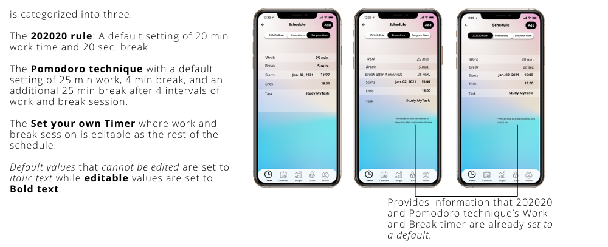

My Process:
1. Empathize:
User Research
The increased screen time of the students and employees due to virtual learning and work from home has also increased
eye strain complaints such as tired dry eyes, headaches, and blurry vision. Most of the students are affected by this.
I
wanted to learn more how the students do to prevent having these symptoms. I conducted observations by listening from my
classmates who shared their experiences and stories during our online classes. This allowed me to gather information and
gain a deeper understanding of their feelings, thoughts, and behaviours.
My main takeaways from the Observation are:
- Most students don’t take breaks during long hours of study session
- Some uses Pomodoro technique and take the advice of their Professors to follow the 202020 rule
- Uses a timer but say it is a hassle to start is again after it finishes
From my findings, I constructed a persona, Sara, to help me understand how can I help our users to achieve their goals
using certain features of the app.
2. Define:
Brainstorming
I started to brainstorm ideas and created POV and How Might We Statements from the Insights and Empathy Map.
How might we help Sara avoid health problems despite her busy schedule?
- Encourage her to take breaks by providing her a continued timer that she can set based on her own preference schedule
- Provide learning materials such as articles and videos on how breaks are very useful for physical and mental health
- Provide satisfaction to users by how they did well and how productive they have been
How might we help Sara organize all her tasks?
- Option to start schedule immediately or schedule her task on a certain date
- Providing a calendar to see, edit, or add tasks
- Notifications to users to update them if it’s time to work or to take a break
How might we help Sara get a flexible schedule for her study session and breaks?
- Option to set their own timer or use a default using 202020 rule or Pomodoro Technique
User Flow
I created a flow that allows flexibility for users to start their own timer now or schedule it on another date or time.
They can view their schedule on an added calendar. Certain features such as insight, learn, and user profile are added for
benefit. I created this to further organize app from start to finish.
Click to Zoom
SIESTA User Flow
3. Ideation:
Sketches and Wireframe
I started to visualize my idea for the features of the app using pen and paper and later moved on to Procreate for low-fidelity prototype to create a neater canvas. I then started to create high-fidelity wireframes using Figma.
Low Fidelity Wireframe
Pen and Paper
Low Fidelity Wireframe
Procreate Sketches
Features of the App
Signup Flow
Start now Timer
Schedule Timer and Setting a Default

Calendar, Insight, Learn, Notifications
UI
The UI is kept to have a neat and modern design using a frosted glass effect of glassmorphism. The vivid colors of pink
and blue in blurred transparency are chosen to ensure a relaxing vibe to the users. While the black buttons are used to
evoke a contrasting effect to make it more striking to the users.
4. Prototype:
See high-fidelity Figma prototype here.
5. Test
Impact
Siesta was well received among the few users who tested for the app features. They found it easy to use, inutitive, and chic. They found that even though that the concept is simple, there was a particular focus on its effectiveness which is that the users get to set their timer and be productive. They commended that it will really help people especially students to increase their productivity and said that they will use the app if ever it comes out of the app store. They also added a few suggestions that I can add on my next steps to improve the app.
Reflection
This is the first app that I conceptualized from scratch to completion. While I was learning Design Thinking, I thought of this idea to help students. From the start, I focused on what the users needs are and kept it in mind on every step of the process. While making this, I felt at home and happy, realizing that i'm finally doing something that isn't forced but feels natural to me. I love that an idea of mine can come to life and that i can channel my creativity into something worthwhile.
Next Steps
Usability testing gave me a few ideas to improve the app and use it on Ideation version 2 such as:
- The Constant Notification Feature - where users will be notified without fail unless they work on their session already. One of my users suggested this feature since most of the students can be stubborn in their task and probably would just ignore each notification if their work schedule is due already.
- Customizable Theme - I originally used pink and blue for the UI of this app for a relaxing vibe. Some users would like it if they can customize the theme of the app to the color that they want.


{kind=link}
{kind=link}
{kind=link}